Grade de 1 × 1 metro. Planejamento de rota; o controlador continua manual.
Verde: centro livre conectado à entrada. Vermelho claro: centro bloqueado pela margem. Amarelo: livre, mas isolado. As paredes físicas estão em cinza.
780 células · 368 livres · 588 arestas · raio conservador 0.543 m.
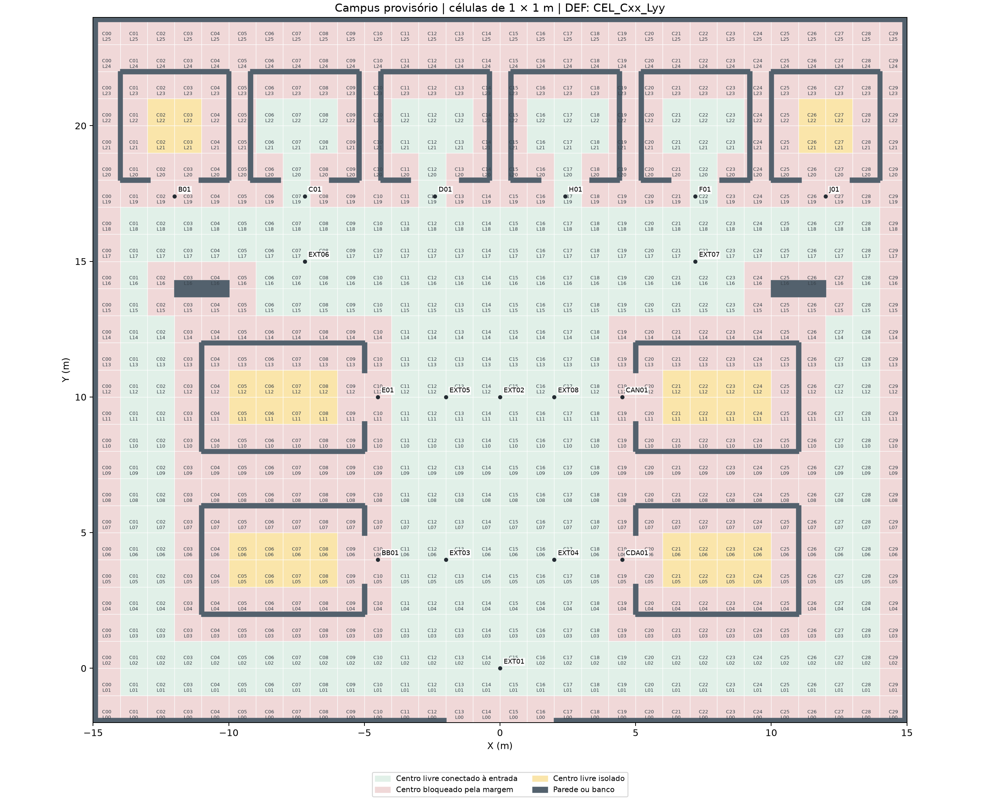
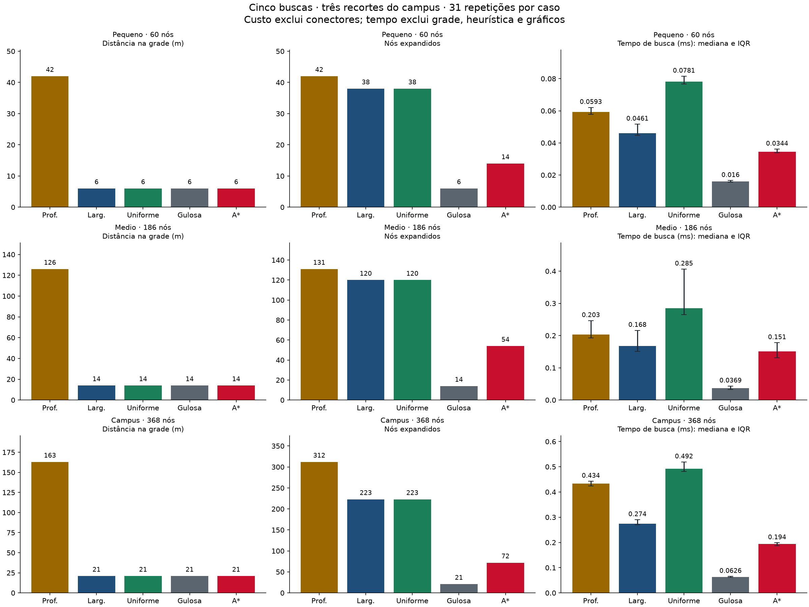
As barras de tempo mostram mediana e intervalo interquartil. Tempos pequenos variam com o computador. Largura e custo uniforme têm o mesmo custo porque cada aresta mede 1 m. Os mapas são recortes do mesmo cenário, não três plantas independentes.
| Local | DEF da célula associada | Conector (m) |
|---|---|---|
| EXT01 — Entrada IESB | CEL_C14_L01 | 0.707 |
| EXT02 — Cruzamento Central | CEL_C14_L11 | 0.707 |
| EXT03 — Acesso Biblioteca | CEL_C12_L05 | 0.707 |
| EXT04 — Acesso Central de Atendimento | CEL_C16_L05 | 0.707 |
| EXT05 — Acesso Bloco E | CEL_C12_L11 | 0.707 |
| EXT06 — Acesso Blocos B/C/D | CEL_C07_L16 | 0.583 |
| EXT07 — Acesso Blocos H/F/J | CEL_C22_L16 | 0.583 |
| EXT08 — Acesso Cantina | CEL_C16_L11 | 0.707 |
| BB01 — Entrada Biblioteca | CEL_C11_L05 | 1.118 |
| CDA01 — Entrada Central de Atendimento | CEL_C18_L05 | 1.118 |
| H01 — Entrada Bloco H | CEL_C17_L19 | 0.141 |
| F01 — Entrada Bloco F | CEL_C22_L19 | 0.316 |
| J01 — Entrada Bloco J | CEL_C26_L18 | 1.030 |
| E01 — Entrada Bloco E | CEL_C11_L11 | 1.118 |
| D01 — Entrada Bloco D | CEL_C12_L19 | 0.141 |
| C01 — Entrada Bloco C | CEL_C07_L19 | 0.316 |
| B01 — Entrada Bloco B | CEL_C02_L18 | 1.030 |
| CAN01 — Cantina | CEL_C18_L11 | 1.118 |
A célula associada pode ser diferente daquela que contém o marcador. O conector reto foi validado e não integra o custo da grade. O CSV também informa o percurso com os dois conectores.
Interiores inacessíveis desde a entrada nesta discretização: Biblioteca, Central de Atendimento, Bloco E, Cantina, Bloco B, Bloco J. Os 18 marcadores são referências de acesso e continuam acessíveis.
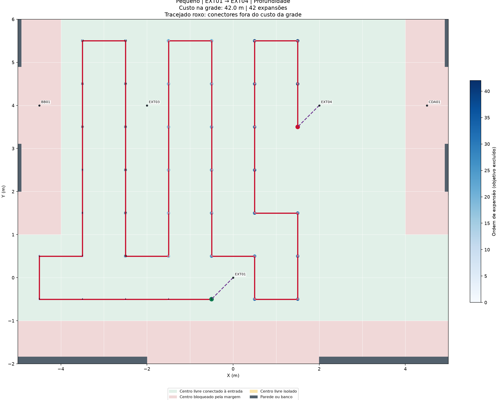
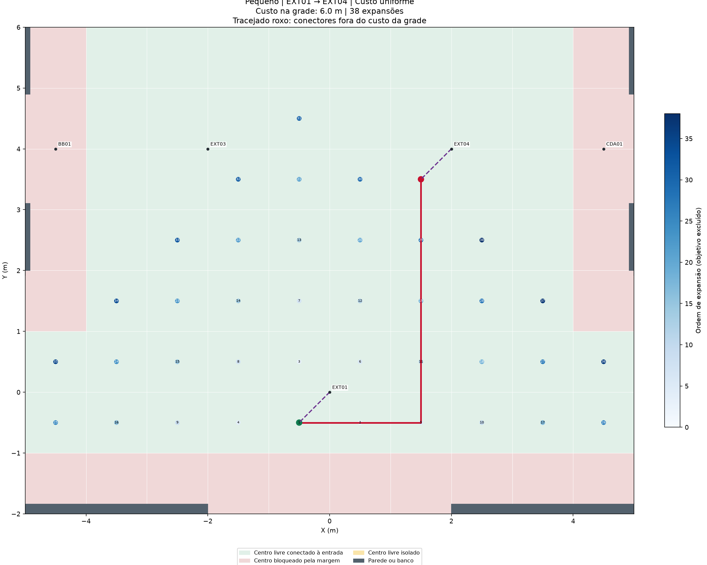
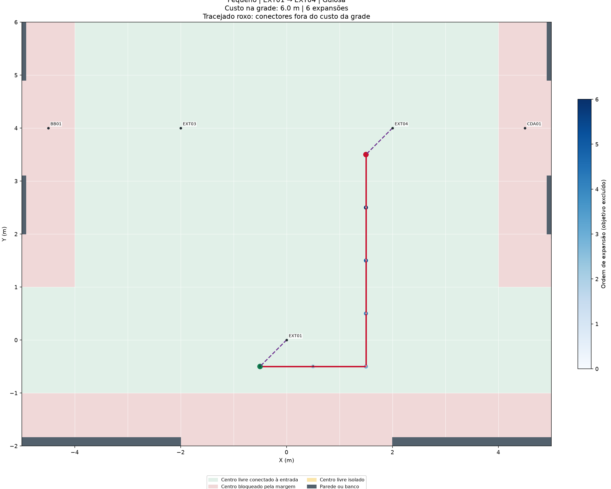
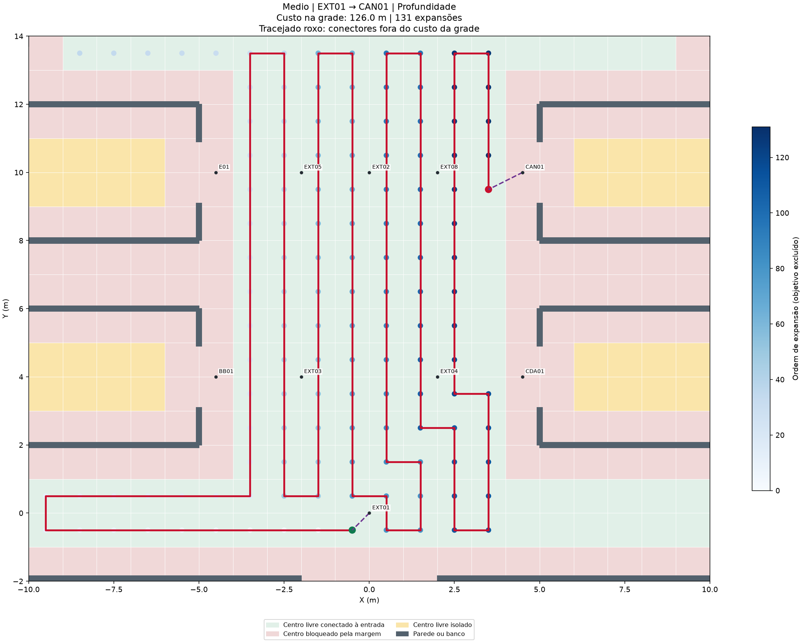
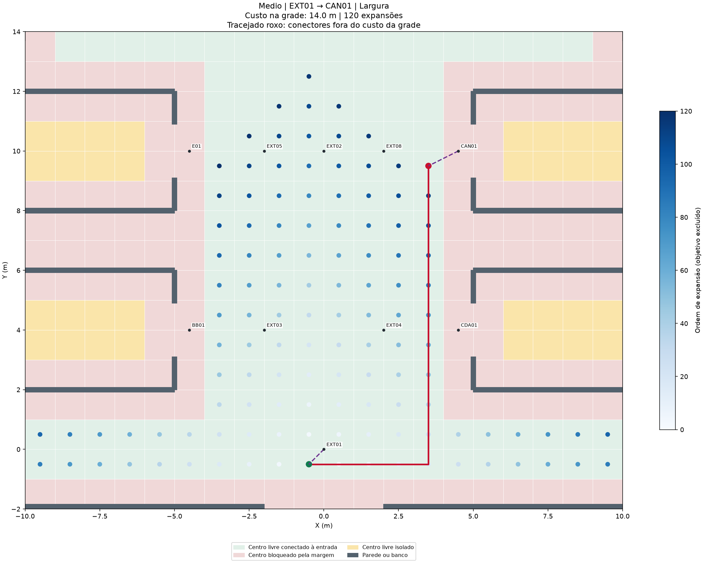
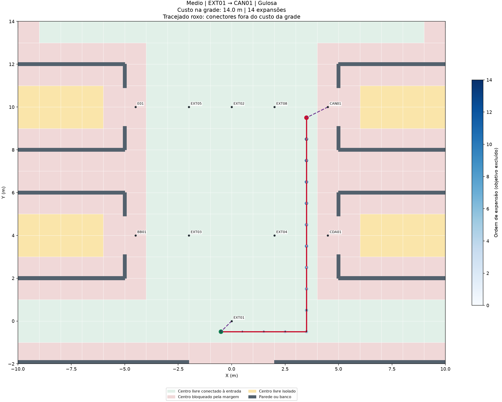
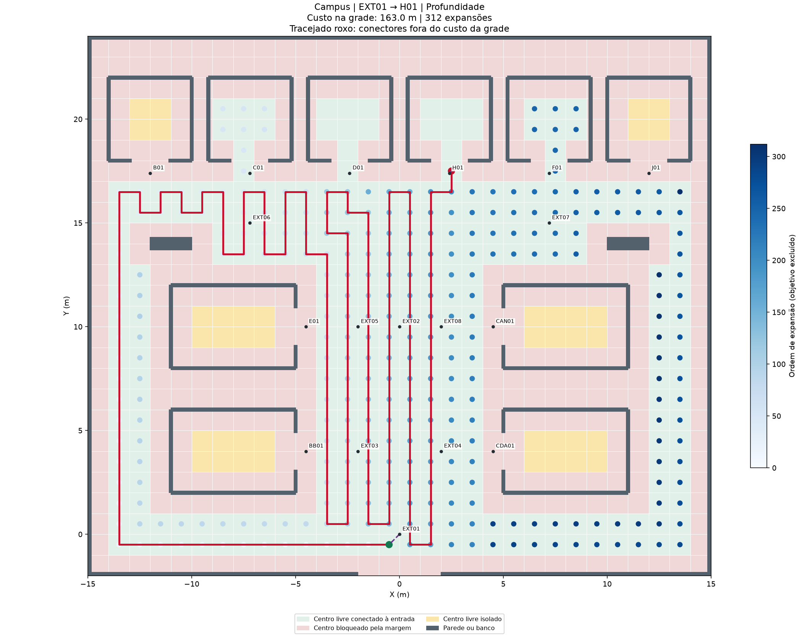
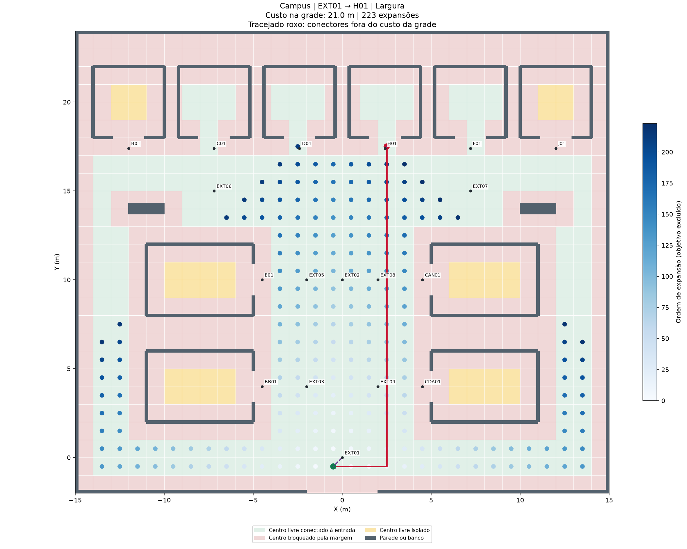
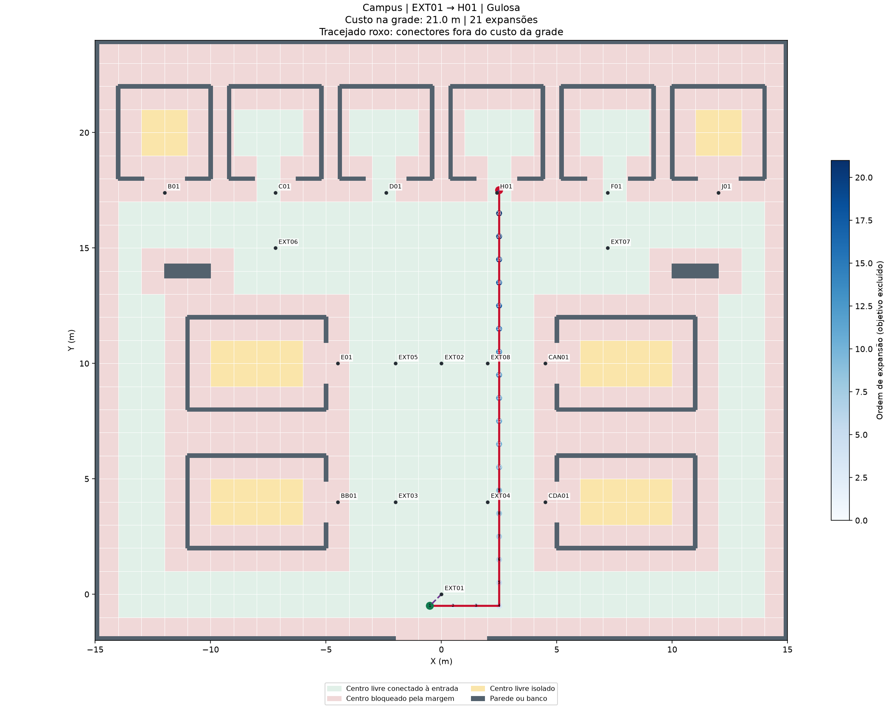
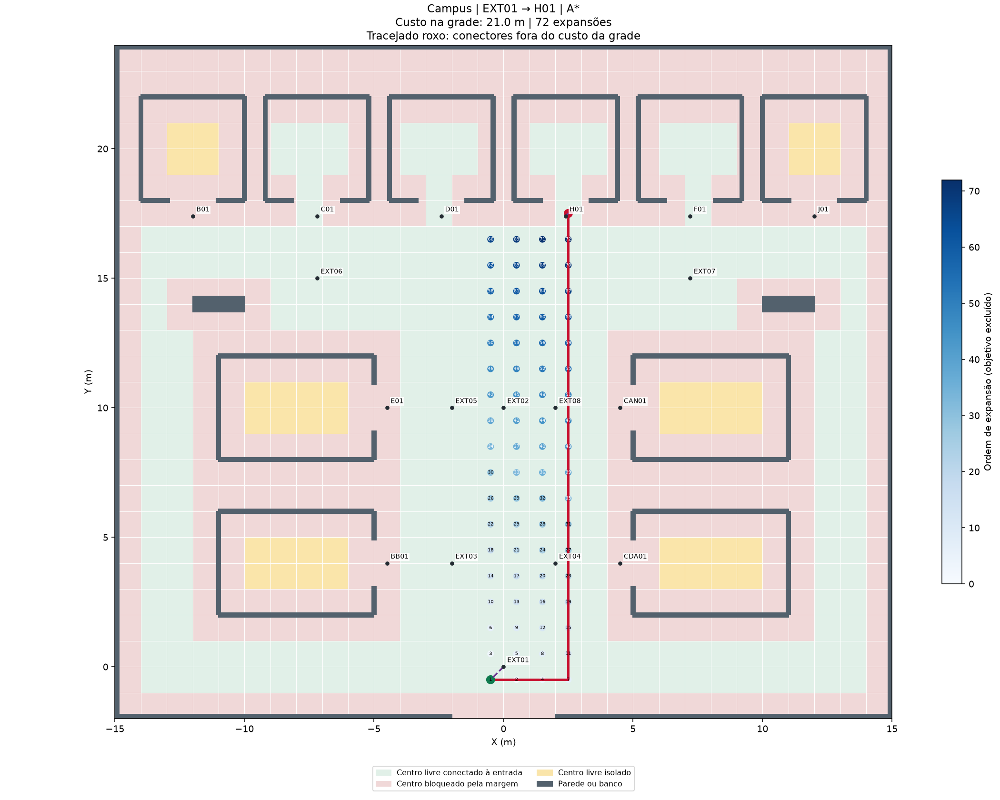
Dados: comparação · associações · células · grafo · rotas, ordens, amostras e ambiente.